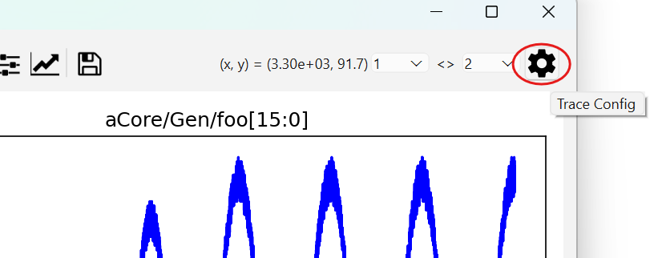
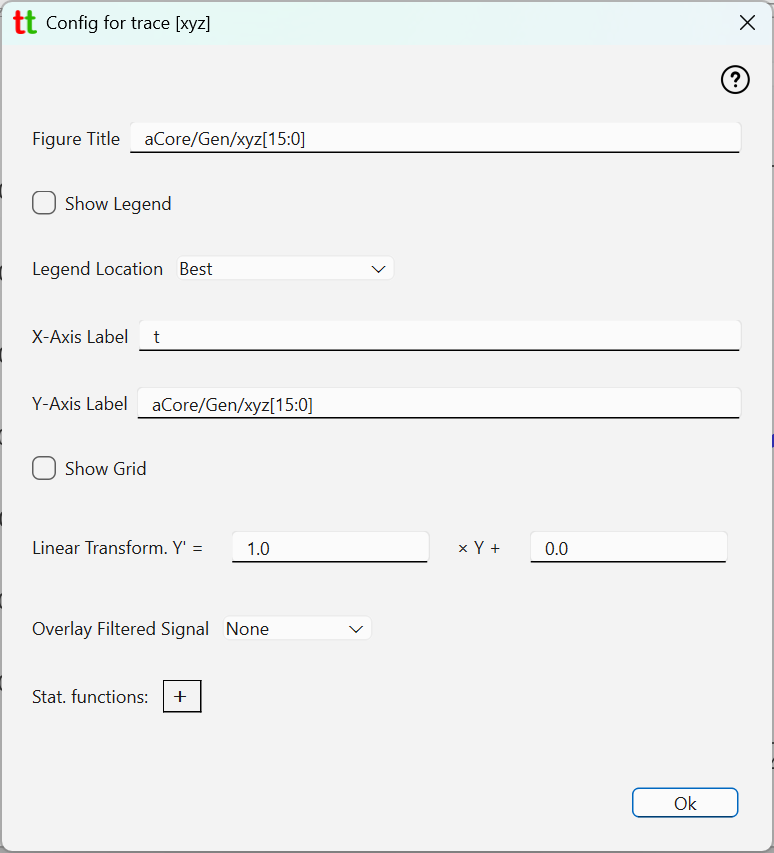
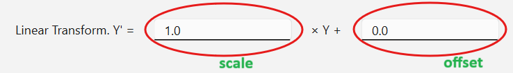
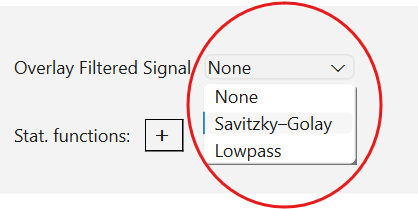
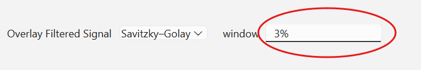
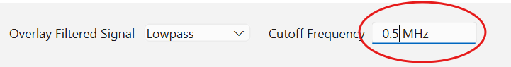
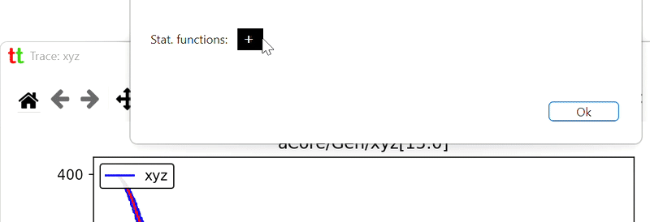

Trace Settings¶
Default appearance of trace plots is useful but basic. You can modify what and how trace is plotted by clicking
on Trace Config icon in trace window.

which opens trace config dialog

Basic settings¶
- Figure title - text that will appear right above the trace plot
- Show Legend - show or no-show legend associated with this trace. If enabled legend text is a trace label optionally followed values of stat. functions (see below). If multiple traces are rendered, then label will also include trace version number.
- Legend Location - position in the plot where legend will be placed. Default is "best" which imply automatic legend placement on the plot.
- X-Axis Label - label to be shown on the x-axis. Note that if set, then time unit (as configured in the Project tab) will also be appended to this label.
- Y-Axis Label - label to be shown on the y-axis.
- Show Grid - is grid to be shown in this plot.
Linear transform¶
Trace data will typically be an integer representing fraction of some voltage or current range. Hence, to display correct physical value on the y-axis you will need to change scale and offset in linear transform function Y' = scale * Y + offset, which by default are set to 1 and 0 respectively.

Overlay filtered signal¶
If the trace captures analog signal it will most likely be noisy, and you may want to apply some smoothing filter. These new smoothed signal will be overlayed on top of the existing "raw" trace. Two filters are available: Savitsky-Golay and digital lowpass filter using Butterworth function.

Savitsky-Golay filter¶
If you pick Savitsky-Golay filter, then savgol
function from SciPy library will be used for filtering, with polyorder (the order of the polynomial used to
fit the samples) set to 2 and configurable window_length (the length of the filter window). You have two ways to
set window_length.

You can either set it as a percentage of total number of data points (default is 3%) by appending percent sign in the window text input field, or you can specify absolute number of datapoints in filter window by simply writing a number without percent sign.
Lowpass filter¶
If you pick Lowpass filter, then you have to specify cutoff frequency and must provide physical unit (MHz, KHz, etc.) for the frequency value in the Cutoff Frequency text input field.

Stat. functions¶
Basic statistical functions (min, max, range, mean and standard deviation) can be added to be computed and displayed with the trace legend. This means that to see them you need to toggle Show Legend checkbox above.
